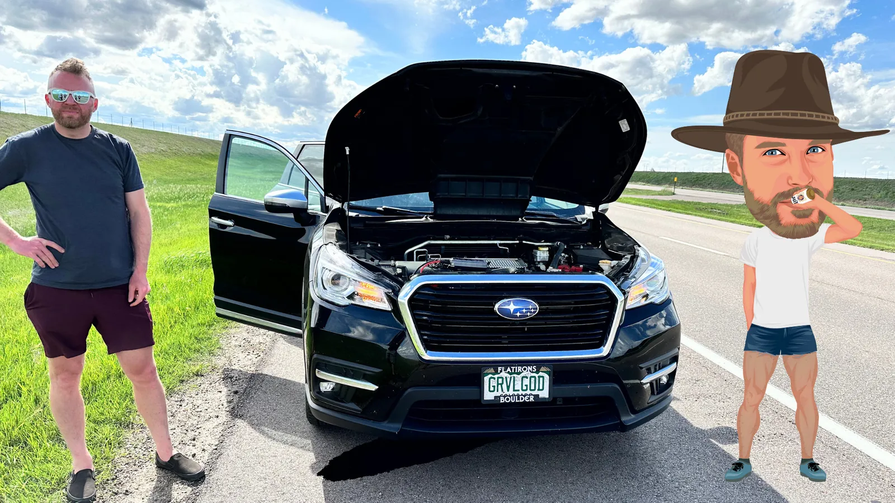
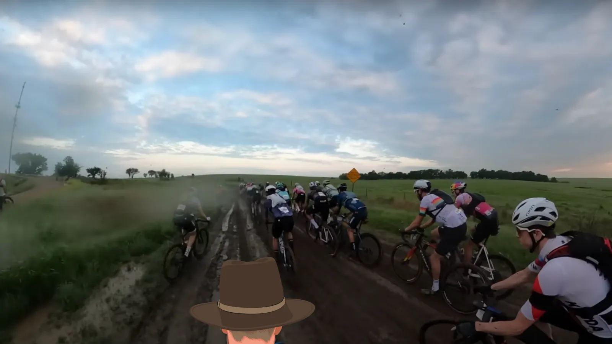
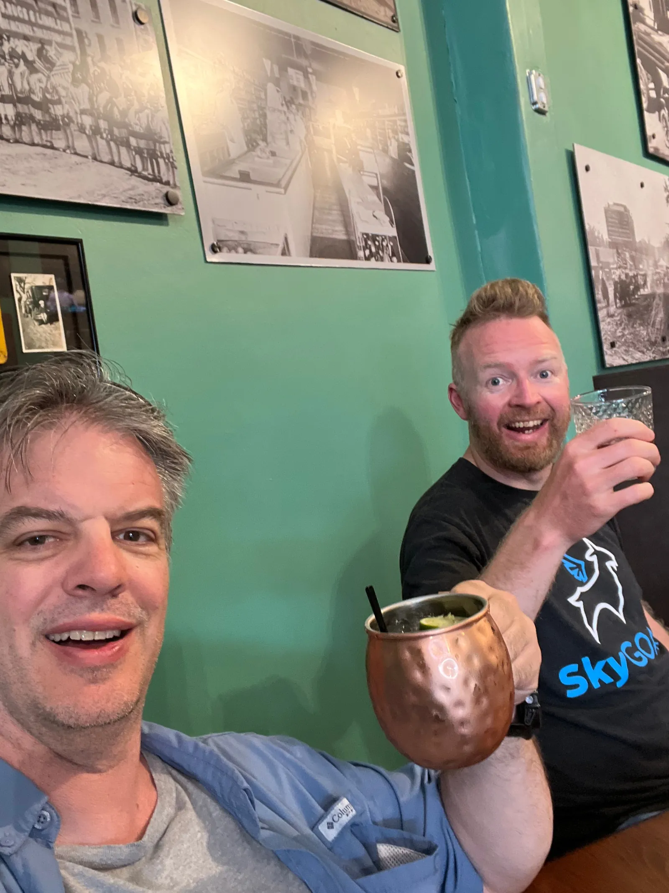
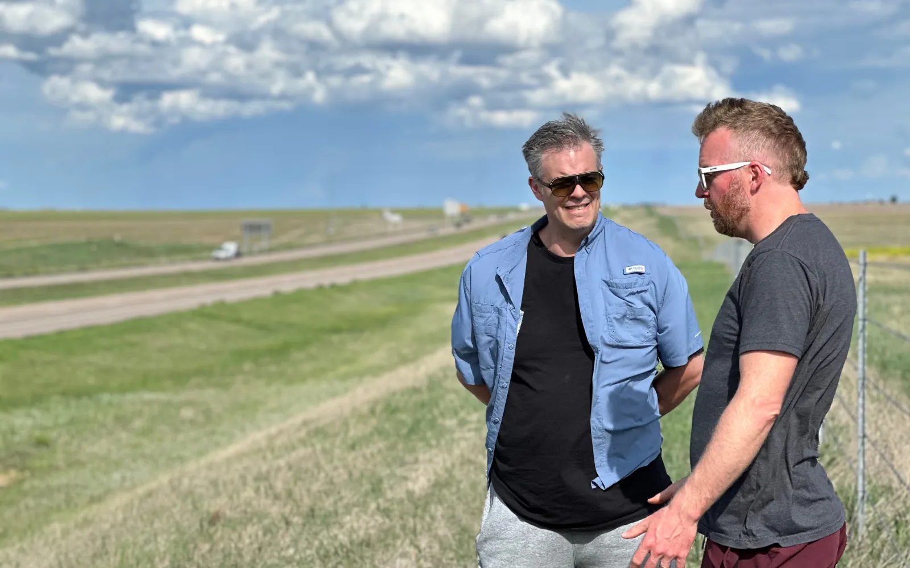
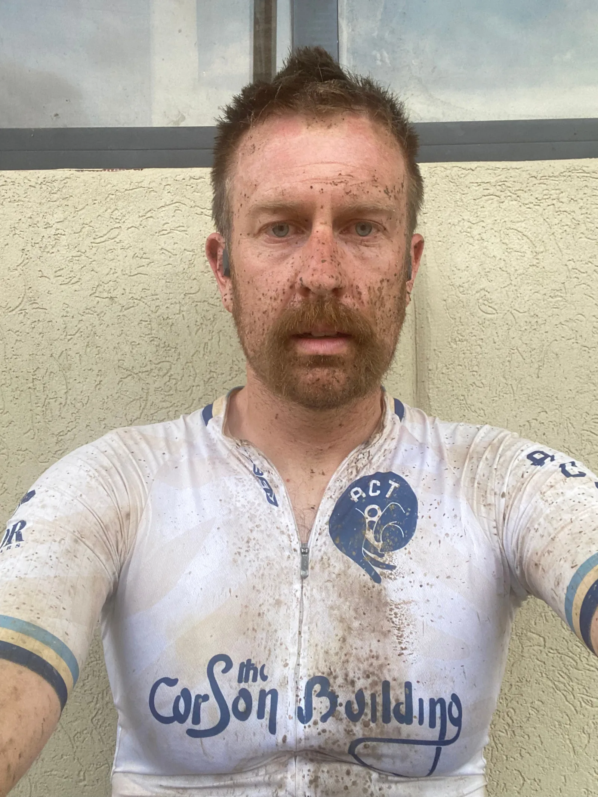
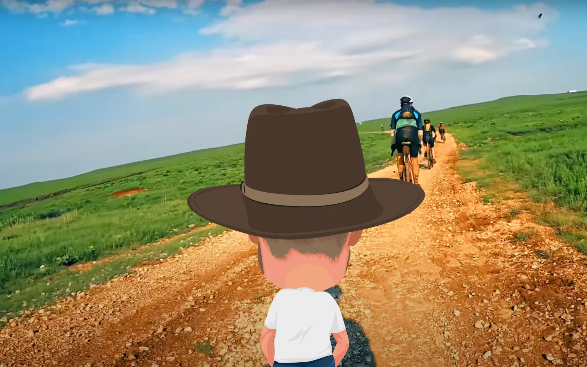
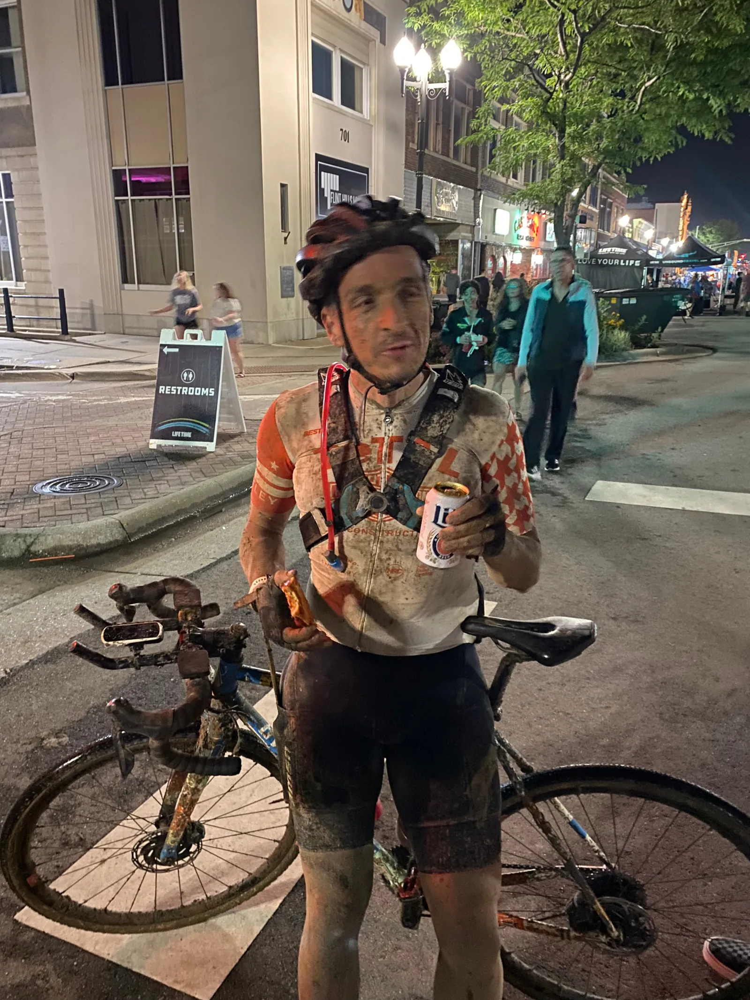
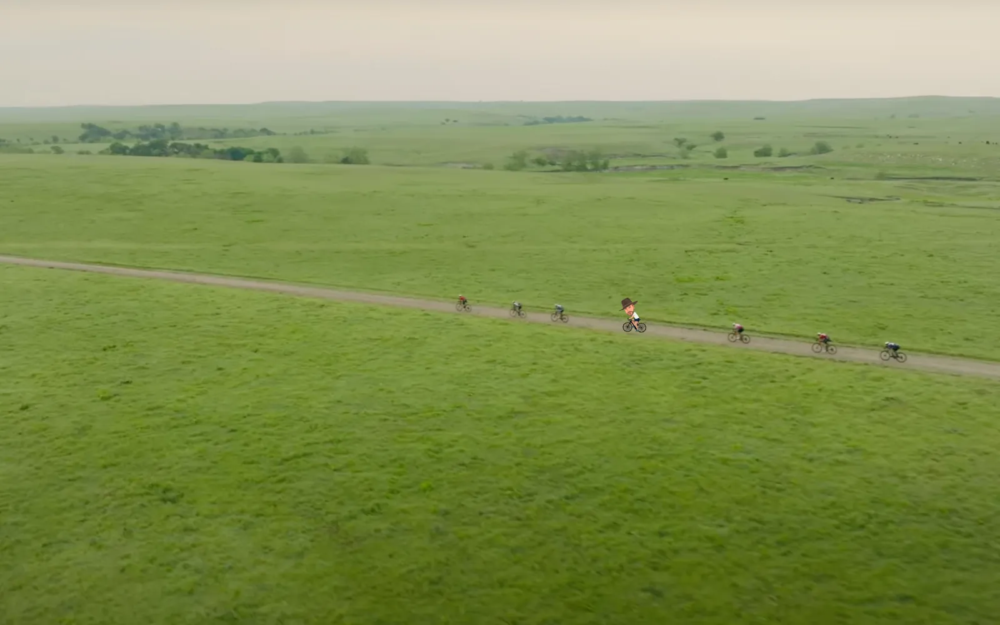
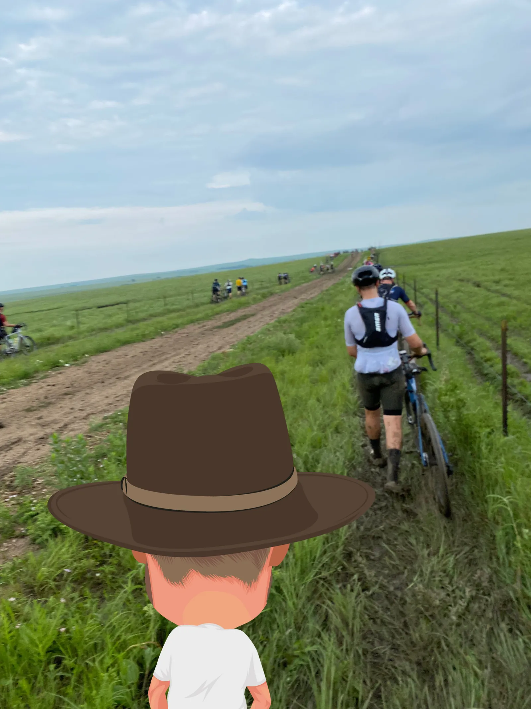
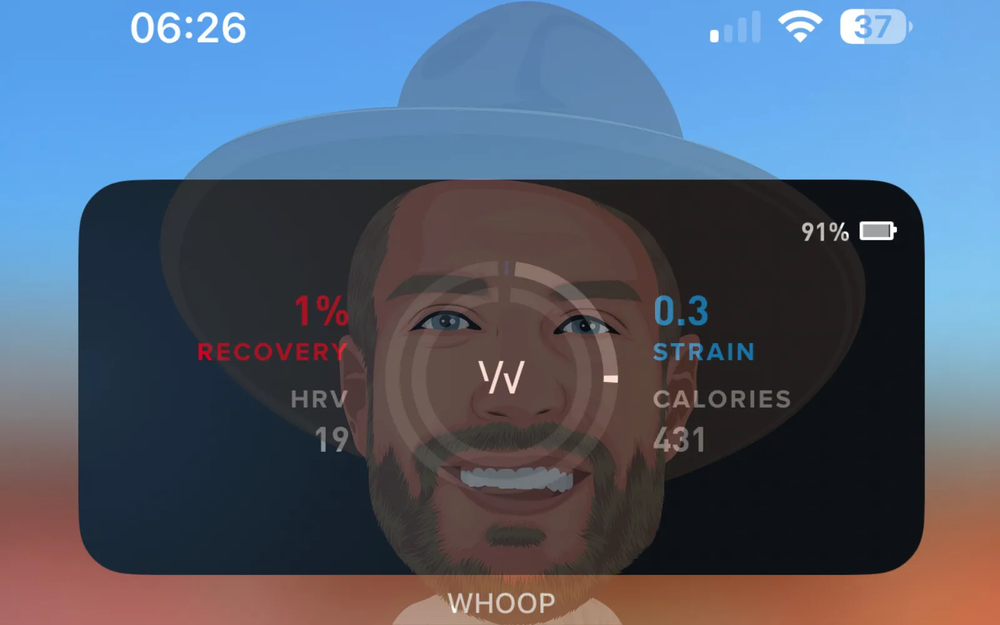

The tow truck roared up at 45 mph and screeched to a halt right in front of my Subaru. A large man leaped out of the cab dressed in a bright construction vest and galloped up to us with a labored stride.
“HOW YOU BOYZ DOING!? the man boomed. He took one look at the Subaru and looked at the pond of oil underneath it.
He turned to me and grabbed my hand. They were twice my size, gnarled, ferocious.
“I’m Sahn-TEE.”
“Matti.”
“MAH-TEE?”
“That’s right.”
“I’LL REMEMBER THAT ON ACCOUNT OF THE RHYME.”
Sahn-TEE didn’t talk; he yelled. I suddenly realized that he only spoke in caps because he worked on the highway, and it was tough to hear anything with 18-wheelers ripping by at 80 mph.
Sahn-TEE turned to the Subaru, took another look at the pool of oil growing under the front tires, and said, “YOU DIDN’T ASK ME, BUT I THINK SHE’S DONEEEEEEE!”
“Really?”
“YEEEEAHHH. I SHOULDN’T SAY, I SHOULDN’T SAY…” Sahn-TEE paused a beat, took off his cap, crawled under the front wheels, and shook his head.
“DONE!” he confirmed. “WHAT YOU DO TO HER? YOU CHANGE THIS OIL YOURSELF?”
He stared at me, took me in—pencil neck, pipe cleaner arms, rainbow socks, and…a cowboy hat.
“I didn’t do it. I took it to the dealer, and they changed the oil.”
“NO SHIT. WHEN?”
“Yesterday.”
“WELL, THEY’RE GOING TO BE YOUR BEST FRIEND!”
“What’s next?”
“WELL, I CAN TOW HER TO THE SHOP FOR YOU AND GET YOU OFF THE HIGHWAY. THEN WE CAN TAKE IT FROM THERE.”
And that’s how, two days out from Unbound 200, My brother, Howdyshell, and I found ourselves in WaKeeney, Kansas, halfway between Denver and Emporia, unloading all our shit onto the oil-stained parking lot of 4B towing without any idea how we’d ever get the hell out of WaKeeney, much less get to Unbound on time.

I sat on the back of the Pro field, getting sucked along in the monstrous power of all the big names in gravel. We were clippin’, and I prayed we continue like this for twenty or thirty miles, working past a good chunk of Unbound cheap and easy.
As I thought that, a monstrous ATV with a film crew suddenly accelerated past me, onto the shoulder, and over to the right, eager to capture something. I looked up and noticed the writhing snake of riders suddenly veer off the champagne gravel to the right into what looked like a swamp. Before I knew it, I was with them, blinking, dumb, trying not to unmount, spinning in a messy brown soup that quickly brought my Cervelo to a halt.
Oh. This really is going to be an Unbound.
🚨🚨Hot take!!!🚨🚨
So yeah, the mud. Unforgivable? Should they have rerouted? Is it OK that people paid ungodly sums for their entry fees, travel, lodging, etc., only for many to end their day at mile 14?
I’m of two minds here, but my forbidden thought is this – if you’re sure you can finish Unbound, it’s not Unbound.
So many things in life are certain. In most racing, the script is known, and people know exactly how the game is played and how to play it.
But not Unbound. People are trying, of course, but they never totally figure it out because you can’t figure it out. The very thing that makes Unbound so revered and popular is the exact thing that guarantees no guarantees.
🚨🚨End Hot Take!🚨🚨

“OK, everyone, get the fuck out here and stage your aid station bags.”
No one on earth is like Joe Howdyshell; I’m lucky to know him.
Two days out, he caught me hesitating near a carbohydrate, and he all but forced it down my throat.
“This is the critical window,” he said without evidence. “Wolf it down.”
You need someone in your corner who knows a way. It is not ONLY way, but it is A way, and while you’re preparing for Unbound, you need someone there to help you cut through your blindspots and neurosis, some cool whiskey-flavored spring water to snap you out of your own self-sabotage.
Howdyshell is the perfect aid station support: He’s supremely knowledgeable but fun. Bauchaurus, but disciplined. Detail-oriented but human. Compassionate but hard. He’s the sort of person that will see you come into the second aid station missing a leg and brakes, sew your leg back on, replace your brake pads, and stuff you with calories, all while singing a Katy Perry song at the top of his lungs in jorts faintly reeking of afternoon whiskey. He’ll ignore the careful speech you prepared, admitting defeat, lift you onto your bicycle, and shove you back into the dark. You have to finish because he’s not your therapist; he’s a drill sergeant disguised in a sombrero.
By contrast, then there’s my brother Andy, 14 years my senior, “Uncle’, as my children call him, standing in the way badly filming everything, utterly confused about how he ever ended up in Kansas watching idiots ride through cow pastures.
My brother is every bit as essential to the process of Howdyshell. First, if my brother wasn’t there, Howdyshell might never make it to the aid stations because he’d be napping off his mimosas from breakfast. Second, my brother’s incompetence and naïvety in supporting and understanding bike racing is a welcome foil to the white-hot intensity of Howdyshell. While Howdyshell is furiously cleaning out your drive train and launching into a speech about finding your sack and rising to the occasion, my brother is offering you a cookie and self-consciously asking if he can have a bite, also.
Spend five minutes with both of them, and you’re ready to face things again, and you move out of the aid stations, the frantic tents, bumping music, and the carnival atmosphere back into the unyielding nothingness.

“I’m so sorry. We will do everything possible to make this right and ensure you have a good trip. Save the receipts for your travel expenses, and we’ll reimburse you. We will send a tow truck to WaKeeney and return the Subaru to Longmont.”
The Subaru dealership was my new best friend.
As I was packing up the day before we left for Emporia, I noticed the odometer in the Subaru Ascent was over the mileage suggested between oil changes. Past Matti would have ignored this and not bothered getting an oil change. But my life approach has evolved after two kids and seven years of marriage. Two hours later, after a quick trip to the Subaru dealership, the oil was changed, and the Suby was ready for another 5,000 miles of flawless transportation.
That assumption was interrupted by the sudden loss of power just a mile and a half off the ramp from WaKeeney. What had happened? The oil pan plug wasn’t tightened properly, and oil, the lifeblood of the engine, had slowly been leaking for four hours as it labored under the load of three dudes, four bikes, and a rocket box pushing through the thick summer air at 82 mph for four hours.
“I CAN TAKE ONE OF YOU BOYZ AS FAR AS HAYS,” Sahn-TEE said. “I BET YOU CAN SNAG A RIG THERE.”
So the next morning, Howdyshell took a ride with Sahn-TEE, rented a Dodge Ram 1500 pickup truck with a 2-inch hitch, and before I knew it, we were back on the road with enough time to make it to Unbound. The bitch part of me that fantasized about being stranded in WaKeeney forever and working at the Tropical Mexican Grill to save up enough cash to buy a 1998 Honda Civic and make it back to Longmont after a few months instead of facing the torment of Unbound.
Before I could nurture that fantasy further, Howdyshell turned to Uncle and I and said,”What’s the fastest car in the world?”
“Ehhh….” We both responded.
“A RENTAL CAR!” And with that, Howdyshell floored it out of WaKeeney toward Emporia.
At least the conversation on the way to Emporia was good:
“Women are more emotional than men,” my brother said.
“You are a goddamn sexist and should burn in hell,” Howdyshell said.
“Is having treats bad for my weight loss goals?” my brother said.
“Treats give you ass cancer, and you will die!” Howdyshell said.
Before we knew it, we were pulling up to the finest house in Emporia and getting sweaty man hugs from Forest and Juan. Twelve hours until the start of Unbound. LET’SSSSS GOOOO!

“You fucking did it, Forest,” I said as he crossed the line.
Forest and I have been working with each other for over three years, and Unbound was always something he’d wanted to do until he did it.
“Uhhh…” Forest managed. I did my best to assist him on my gimp foot, and somehow, we found a space on a sidewalk next to a burrito stand, and we both sat down heavily and stared off into space, saying nothing.
Forest is supremely gifted. He’s a firefighter, husband, dog dad, farmer, and he somehow gets involved in hundreds of other projects while maintaining a regionally competitive training load and producing one of the most disgusting mustaches I’ve ever seen. On my website, I have a page that demonstrates just how much you can improve if you listen to me, and I use ‘The Dane’ as an example. He’s the Dane. I don’t like Danes or Danish culture in general, but my ethnic bigotries will always give way to respect.
The forest is also an Unbound virgin. Like all virgins, no matter how well endowed, your first time is often…rough. You forget things. Maybe you get the sequence of events wrong. And, well, even if you get the mechanics right, no matter how much planning and preparation you’ve done, nothing will prepare you for the emotions of the act itself.
Forest finished in 13’32” – a triumph. Still, as we sat on the sidewalk of downtown Emporia, I was clearly sitting next to a different person.
“Time,” Forest said. “Time doesn’t matter. It never existed. Don’t you understand? If you lose time, don’t try to make it up. The more you think about time, the more it works against you. You have to set your ambitions aside, all the gnawing performance goals that add pressure to each pedal stroke you can’t bear.”
“If you were going to beat someone, you would beat them.” He continued. “If you’re not better than them, you won’t. There’s no point in clinging to road racing tactics unless you’re at the pointy end of the race; the distance of Unbound will sort it all out. Eventually, the truth will play out.”
“Do you want a burrito?” I asked.
“That was a brutally hard effort,” He said. “Probably the hardest thing I’ve ever done on a bike. It wasn’t even the being on the bike that long, just the terrain and the weather combined with the effort. I honestly questioned my ability to finish until the last aid station, and even then, was skeptical and cynical of any mud pit ambushes or other classic asshole gravel course finishing moves.”
“Here’s your burrito,” I said. Forest hadn’t even noticed I had left, ordered him a burrito the size of a pie plate, and returned. I’m not sure what I missed, but I could see his body shaking involuntarily on the concrete and didn’t want to have to tell his wife that her husband passed dictating the Gospel of Unbound and had ascended to the pearly gates because I hadn’t forced him to eat something.
For the time being, we were stranded in downtown Emporia. Howdyshell and Uncle were still at aid station two, waiting for the arrival of our third rider, Juan.

I made it through the mud mostly clean, except for a sharp throbbing in my right foot, which I had managed to roll rushing through waist-high grass pushing my bike.
The field was shattered, and the sun was rising, gorgeous, crimson rays erupting from the horizon and falling on the ragged horde of bike racers cutting through the cool prairie morning. I held one thought and let it play over and over again.
“Be cool, be cool, be cool.”
People were pissed. Everyone I was riding with still harbored ambitions of glory that were instantly broken by four miles of peanut butter mud, and after they emerged through that crucible, they began chasing with a fury I’ve only seen out of juniors at the start of a CAT 4 criterium.
If Oppenheimer lacked a suitable fuse to set off the first atomic bomb, he could have done worse than channel the collective watts spent by everyone around me trying to regain the front group.
I saw people bulldozing past twenty-person pace lines in the ditch. I saw people taking lines through culverts to gain a second. I saw full-out sprints at the top of hills to gain a few extra miles per hour going into a 90-degree downhill turn. Women passed me asking to work together and took pulls into the wind, and it took me 430 watts to hold their wheel. I saw aero tucking down a single sinuous track with horror gravel just inches from their wheel on either side.
“Be cool, be cool, be cool.”
Data is neat, but something device manufacturers and my primary employer want to be false is that all the metrics in the world can’t replace sensations. At the bottom, you’re an animal; technology can’t account for all the external and internal data and give you a neat, simple metric to meter your effort.
Your body, on the other hand, ingests every input and spits out a guiding principle in a simple binary:
I feel good.
I feel bad.
While everyone around me lit every match in their book, something low and unknowable kept the throttle steady. My ego stood outside the control room and raved, paving the glass with spittle, but couldn’t break through and push the lever to the full rabbit.
Back to virginity – this wasn’t my first romp in Kansas – it was my third. Before I started Unbound 2023, I’d already had 24 hours banked from the past two years in my legs at this race and, more importantly, into my thick skull.
In my first Unbound, I suffered to the point that death seemed preferable to finishing. The second, I held back too much because I never wanted to repeat the first. The entire time, my body was watching, calibrating, and adjusting to the appropriate effort suited for 200 miles.
This is all to say; I never paced myself carefully. I am the person writing this sentence. I am the raving, mouth-foaming lunatic outside the control room. Another part of me took over. If I was into country music, I’d say Jesus took the wheel, and I was just a passenger.
Whatever the case, I let go of more wheels than a Fred in a fondo and waited for the third act to unfold.

“I’m going to make a T-shirt that says ‘I survived Aid station 2,” said Uncle. “I’m kind of annoyed with myself. We were there for seven hours. I’m a game store owner. If I had known beforehand, I could have brought a few games for Howdyshell and me to play while we waited for you guys.”
We were all at the Airbnb, all of us except for Juan. Juan was having an Unbound Unbound. Nothing had gone to plan. From what we could gather, he’d punctured, struggled to inflate his tire, managed to, then his derailleur had acted up, and he had made his way through blistering heat and torrential downpour three to four hours after Forest and I had come through on a single-speed bike. Reportedly, at the second aid station, even Howdyshell had decided to shelve his Braveheart speech and was about to offer him a ride back to the finish, but Juan had just taken off after asking for a few items like he was afraid to be imposition and melted into the night.
“Well, he just passed the 182.4 checkpoint, so we should start to get to the finish. What should we greet him with?” someone wondered aloud.
No one answered. Then I remembered we still had one Red Baron Pepperoni Pizza remaining in the freezer.
“Uncle, can you cook up Juan the Red Baron? I can’t remember if he’s a vegetarian or not, but he’s eating processed meat tonight!”
Uncle leaped into action. Frozen pizzas are one of his gifts.
“I’ll get some cold Miller Lites lined up for him!” I said.
Soon, we were all piled into the Hertz rental Dodge Ram without seatbelts while Howdyshell slalomed through stop signs to Emporia downtown. Uncle couldn’t find a suitable method to transport the Red Baron Pizza, so he cut it up into pieces and dumped it into an oversized white plastic salad bowl. I stuffed Miller Lite tall boys into my pockets and gimped after the crew past security guards to the finish, and we all watched muddied ghosts appear out of the Kansas night, squinting hard to see if it was Juan.
Finally, we saw him.
“JUAN CAMILO EXCHEVERRIIIIII!” the announcer boomed over the loudspeaker.
Howdyshell rushed to his aid, and Juan walked painfully over to us after a few minutes. I offered him a Miller and preferred a half-empty salad bowl of cold Red Baron Pizza.
“You did it!” I beamed. “How are you?”
Juan paused for a moment. “I was going to quit so many times, but I forced myself to finish so I never have to come to fucking Kansas again.”

I entered the second aid station in a blinding downpour that I didn’t resent. A few hours earlier, the raving lunatic outside the control room had broken in, and I had started to burn a few matches just as Kansas began to bake. I jumped out of the group I had been riding in on a long uphill and noticed that when speeds got slower, like on a climb, the heat was oppressive enough to half-bake a Red Baron pizza.
Despite this, I knew we were in the third act of Unbound, and now was the time to try hard. I wasn’t hungry – I had purchased ten 90g gels from Precision Nutrition and had painfully averaged one an hour for the last nine hours. I wasn’t cramping – I had taken down 7,000 mg of sodium in the same time frame. I wasn’t shattered – the theme song of Moana played in my head, and let’s say I was seeing the line where the sky meets the sea, and it was calling to me.
It called to others as well.
Another guy from the group I had just dropped suddenly appeared on my wheel.
“That was a good effort,” he said. My heart sank.
I looked at the guy, and he wasn’t sweating or breathing. Soon I learned that he was from Toronto, which is hotter than you think in summer, and he hadn’t really trained for this race; it was going really well, and maybe he should start trying to go hard, and boy, wasn’t that mud crazy, but his bike did so well.
I would have liked him if he had asked me one question, but nothing is more annoying than when you’re honestly trying to go fast, and your effort isn’t even enough to disrupt someone else’s breathing. It’s like trying to do anything ‘aerobic’ with Airik Sorenson.
I contemplated just dropping myself off his wheel, but suddenly someone else appeared. I almost crashed taking him in because he was rolling on a Cannondale missing 1/2 of a fork with yellow handlebars twisted forward into a U-shape, like a pair of prize horns you might see mounted in the basement of a Republican trophy hunter.
“Hey, fellahs! How is it going?” He said in a lilting, goofy voice.
We barely had time to respond before he was pulling away from me and Canada; as we entered a shallow downhill, he put his hands on the bull horns, dropped his head, and proceeded to pull us along at tremendous speeds pushing an absurd gear.
Maybe aero really is everything.
I was third position behind this guy, and he had me on tap out several times whenever the yaw angle of the wind deviated slightly from 0 degrees in this hellacious rotation. But I held on because it was like being behind a motorbike, and we were absolutely chewing up the prairie behind the bullhorns of this goofy monster, and if we kept on like this, it felt like we’d be done in an hour.
But then I took a sip from a water bottle and got dropped. Canada, who had been looking back from time to time to see if I was dropped, looked back for the final time and carried on talking to Mr. Bullhorns about how Toronto was a lot hotter than anyone expected in the summer.
Dropped? Yes. Blessed conversation relief? Check.
Anyway, back to the downpour. Somehow Howdyshell and Uncle found me and treated me like a luxury RV. They drained the brown water, filled me up, replaced the tires, and then pushed me back onto the road.
Before I left, Howdyshell cryptically said, “You’re doing really well. Keep it together.”
Howdyshell may be nice to other people, but he holds me to a different standard and doesn’t exactly give away compliments. The last one I received was in 2018, and that was through the mail.
Forty-eight miles to go – what’s the worst that could happen? I actually said that to myself.

The last section of mud I remembered was from last year, but this year was worse. If the first section of mud at Unbound was peanut butter, this was cement, and I barely entered the section before my wheels instantly seized in a thick paste of prairie goo.
I began running down the side of the road on the banked shoulders of hip-high grasses now well beaten down by fellow travelers, but this time, my run slowed to a walk and then a hobble. My right foot was done.
Oh yeah – my foot.
So, during the first three miles of mud at Unbound, I, like everyone else, had stopped trying to ride and began running and pushing my bike for all I was worth. My highest heart rate of the day actually came from pushing my bike, not riding it.
Anyway, the grass was so high at that point that I couldn’t see where I was running. On one tricky section, my right foot violently rolled as I set my weight and the bike’s weight on it. If you’ve ever done any trail running, you know what’s coming for you later, but in the moment, the combination of adrenaline and endorphins soothed the sudden throbbing and delayed the consequences of that misstep to future Matti.
As the day wore on, my right foot swelled. The solution was simple – loosen the boas on my shoe. That worked until nothing was left to loosen, and my foot stayed in my shoe because it had grown to my youth’s aspirational foot size of 13. I always wanted to tell the girls I had big feet.
By the time I reached the second mud section, however, I had all but forgotten my foot because the pain had mixed in with the other pain. When I took my first step, however, everything changed.
Every footfall was like being stabbed. At first, I tried to bear the suffering manfully, but in short order, wincing rendered to audible cries every time I put weight on it. I was gorged with suffering and tried to think of another way to get past this soupy nonsense, but I wasn’t hopscotching my way through this mile and a half of hell pushing a bike. The only way past was through.
When I finally cleared the mud, I wanted to amputate the foot. I couldn’t put pressure on it, so I only mounted and pedaled with my left foot for several miles.
But the finish was near; my body could feel it, and something down deep punched the turbo button, and the ditches melted into a blur.
Just as I swung under the bridge of I-25, Hayden swung into view.
I have yet to mention him, but I’d made a new friend out on the road, and he wasn’t Canadian; he was Hayden Werner. He rode for Above and Beyond Cancer, and we’d played off each other all day.
Initially, we’d try dropping each other – me pushing the uphills, he everything else. We went back and forth like this for about 80 miles before finally calling an unspoken truce and swapping pulls and exchanging light banter.
That cadence is an emergent phenomenon in Unbound that maybe only Forest articulated well. The race is so long that all of your strengths and weaknesses eventually play out to their inevitable end, so if you cannot shake someone for 80 miles, ride with them instead of against them. If you were truly better, you wouldn’t be battling them, so let it go and make a friend.
We came to the final hill entering Emporia, and I lit my last remaining match and roared up the hill, swung through the college, and entered the sweetest stretch in cycling – the finish to Unbound.
There wasn’t much of a crowd – the rains had thinned the crowds – but there were enough half-buzzed raucous hooligans left to lift me as I crossed the line.
I looked back – 12:26, good enough for 48th place.
I’ll admit I’m proud of that. Bike racers aren’t comfortable celebrating their own accomplishments, nor should they be, but given my corn-fed genetics, character flaws, and weaknesses, 48th in the pro field approaches…respectable. It requires no excuses, no qualification; it’s just emphatically, undebatably OK, which is all I ever wanted.

Forest, Howdyshell, and Juan were leaving. The weather was beautiful today, and I sat on the concrete drive basking in sunlight, unwilling to put weight on my bloated right foot.
None of us had much to say, Unbound was still working through us, and though we all looked awake, we were all beady-eyed husks running on adrenaline and lousy coffee, straining to keep moving because that’s what’s kept us alive the day before.
Uncle and I could only linger. Howdyshell’s rented Dodge Ram had to be returned to Hays, Kansas, and he had to catch a ride back to Longmont with Forest. Uncle and I had to stay another night in Emporia and wait for the rental companies to open on Monday and pray they wouldn’t cancel our reservation like the six other rental companies I had tried to book prior to the weekend.
The pressure was on – our sister was getting married in a few days, and we had to find some way from Kansas to Wisconsin.
After some grippy embraces and promises to write, Forest, Howdyshell, and Juan pulled away, and Uncle and I stood gaping in the driveway.
We borrowed the hosts’ van the next day and entered the Enterprise office.
“Oh, my bad,” the Enterprise guy started in.”I tried to call you to say we didn’t have anything, but the number rang to some random guy named Kevin in Albuquerque. We don’t have anything for you – we don’t do one-ways or hitches. Best wishes in your search!”
The scourge of owning an old 505 number strikes again.
Hertz was our only hope. Uncle and I drove out to the edges of Emporia, past the RV park Howdyshell and I stayed at during our first Unbound, and we missed the destination several times. After Google’s insistence, we realized the towing company we were parked outside was the rental location; we just hadn’t seen the small, faded Hertz sign hiding underneath a gigantic parking lot light near the entrance.
“We need to rent a large vehicle, one-way, with a hitch.”
“HERTZ DOESN’T ALLOW HITCHES,” a gruff voice boomed behind Uncle and me.
We turned. His name tag said, Dennis. Dennis didn’t like us. By the look of his desk, Dennis enjoyed rodeos and had a strong interest in monster trucks. Dennis didn’t look mad; he looked calm yet guaranteed to slash the tires on the vehicle we hadn’t even rented yet.
“We do offer one-ways,” another Hertz employee put in. Uncle and I turned again. The other employee was a redhead, newly married, and young, no doubt employed by Hertz corporate to balance out Dennis, whom they couldn’t fire because of the union. Why do people have anything against redheads? In my experience, they’re good people.
“How does a GMC Acadia sound?”
“Sold.”
After disassembling three bikes, a monsterThule bike rack, and all our accouterments, Uncle and I pulled out of Emporia and pushed the pedal down toward the North. Another Unbound was in the books.
“So, like I was saying,” Uncle said. “Women are more emotional than men.”
“Do you want me to call Howdyshell to get in on this conversation?”
Comments
1 comment from the original post. Comments are closed.
Gary Lloyd ·
Congratulations Matti on your race, what an effort and performsnce.